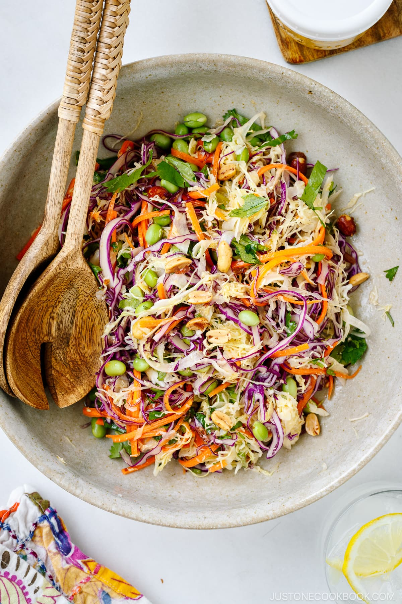
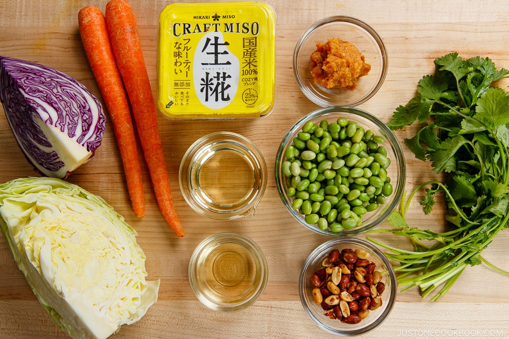

Asian Cabbage Salad

Description
Crunchy, bright, fresh, and satisfying. This Asian Cabbage Salad is an absolute star for all your summer cookouts and dinners. The 3-ingredient miso dressing is simple but punchy. Everyone will be obsessed!
Ingredients
- 3 Tbsp miso
- 6 Tbsp neutral oil
- 2 Tbsp rice vinegar
- ¼ head green cabbage
- ¼ head red cabbage
- 2 carrots
- 1 cup shelled edamame
- ¼ cup peanuts

Steps
- In a small mason jar, combine 3 Tbsp miso, 6 Tbsp neutral oil, and 2 Tbsp rice vinegar (unseasoned).
- Discard the core of ¼ head green cabbage and red cabbage. Thinly slice the cabbage or shred it using a cabbage slicer.
- Peel 2 carrots. Using a julienne peeler, make long, thin julienned strips with the carrot.
- In a large salad bowl, place the green cabbage, red cabbage, carrot, 1 cup shelled edamame, and ¼ cup peanuts. If you're not serving the salad right away, cover it with plastic and refrigerate it for up to 24 hours.
- About 10 minutes before serving, take out the Miso Dressing from the refrigerator and shake well. Drizzle two-thirds of the dressing over the salad and toss together. Taste the salad and add more dressing, if needed.